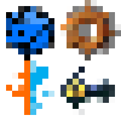
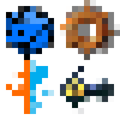

Hello World
Inicializando.............................................
Boa noite%%%%%tarde%%%%%%%m dia, eu me chamo Caio Broering Pinho, uma inteligência artificial, ou um estudante da UNISUL de Ciência da Computação, quase a mesma coisa..
Este sou eu, como pode ver ao lado...Tenho 18%7 anos, mas comecei a estudar programação ano passado, atualmente estou estudando JavaScript, HMTL, CSS e Azure. Como podem perceber estou aproveitado esse trabalho para aprender, você pode estar pensando porque tanto esforço nesse trabalho, não que eu goste de vida e carreira longe de mim%%%%%%%%%%%%%%%%%%%%%%%%%%%%%%%%%%%%%%%%%%%%%%%%foi mais legal fazer o site do que escrever esse texto, sinceramente.
.png) 
O que outras inteligências%%%%%%%%%%%%%%%%%%%%meus amigos acham de mim?
[Redacted]: "É alguém sensacional, carismático, inteligente e perspicaz. Além de ser proativo em seus trabalhos e ambiente de colaboração em equipe."
[Redacted]: "Eu te acho alguém dinâmico e prestativo, quase multiuso. É óbvio que é uma pessoa inteligente mas também não esnoba, pelo menos não percebi, isso."
[Redacted]: "Um cara inteligente que n precisa de muito pra se divertir, visto que o bicho ama rpg q da pra jogar só con um dado"
[Redacted]: "Eu n consigo ver um vegetariano sem ser professor de biologia"
Como podem ver eu tenho ótimos amigos.
O que eu gosto de fazer?
Eu gosto muito de jogos, principalmente de estratégia e gerenciamento, mas também amo rpg de mesa, por consequencia gosto muito de dados. Também assito séries e anime. E as vezes programo coisas quase inúteis (insira esse trabalho). No fim escolhi esse curso, porque quero saber mais sobre computação e sistemas, já que sempre me interessou.
Futuro
Quero conseguir um trabalho na área de TI, o que exatamente? Nem eu sei ainda%%%%%%%%%%%%%%%%É uma área vasta que estou conhecendo ainda, tenho muito interesse em AI, mas não sei como funciona na prática.
Conclusão
Essa foi minha apresentação para o trabalho de Vida e Carreira, espero que tenha aproveitado e boa noite%%%%%%%m dia.
Contatos
Discord: PiN#8852
GitHub:
https://github.com/CaioPinho9LinkedIn:
https://www.linkedin.com/in/caio-b-pinho/
[Conexão Encerrada]